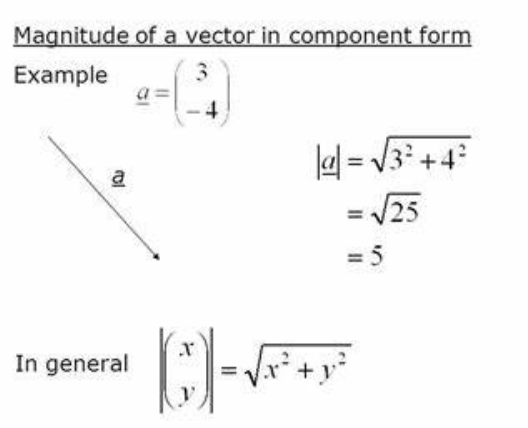
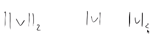
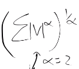

1 Intro
The twelfth lesson of fast.ai.
2 Lesson Overview
We covered the CLIP Interrogator: why it doesn’t work (because we can’t reverse an encoder, actually diffusion is a approximation of reversing an encoder). Then we spent most of the lesson finishing Matrix Multiplication in Python before working on implementing mean-shift clustering as practice for it, broadcasting, and Einstein summation.
3 Lecture Notes
3.1 CLIP Interrogator.
It’s a model where, you put a generated image in, and it (tries to) return the prompt that generated it. In theory, if it returned the correct prompt and you (somehow) had it’s seed, you could regenerate it.
But generally speaking, it doesn’t actually return the right prompt at all! Why not?
Imagine a friend took a photo of themselves.
Using CLIP encoder to compress it, he then send the resulting embedding to Jeremy.
Compressing it makes sense, the embedding is very small, just a vector of a few floats.
The idea is, if Jeremy had the embedding, he could just decode it to turn it back into the photo.
But can Jeremy decode it? No.
The clip encoder takes an image and encodes it. It’s a function f(x).
Does that imply an inverse function f(x)^-1 exists to do the opposite, to decode it?
No. Not every function has an inverse. If the function destroys all the information, it’s not possible to reproduce it.
The CLIP encoder will lose some of the photo’s information, so can’t be reconstructed.
Instead of trying to reconstruct the full original photo via a decoder, which we can’t, we can create something that is vaguely like the original photo, using diffusion!
Take noise of an image embedding and remove the noise. It won’t return the OG picture, but something like it, using conditional diffusion.
Start our diffusion with an image of pure noise, and use the image embedding to guide it to the image output.
Essentially, the model tries to remove the noise that doesn’t match/look like the embedding.
In general, diffusion takes an embedding/prompt and generates an image using it. Ideally, you could use CLIP’s encoder on the resulting image to get that embedding/prompt back.
In other words, diffusion is the (approximation) of the inverse of the CLIP encoder.
Looking back, we said to guide our diffusion with an image embedding, but remember we don’t use image embeddings, we use text embeddings?
Open.ai trained CLIP on pictures and their captions. For each image, we optimised so that the embedding created from the picture by the image encoder is similar to the embedding created from the caption by the text encoder.
So our text and image embeddings should be really similar in CLIP, therefore, we can guide diffusion inference using text or image embeddings.
Right now, we don’t have a perfect way to invert an encoder.
3.1.1 In conclusion:
- We are given an image embedding/prompt and want to invert the encoder to get back to the image.
- This requires perfectly inverting the encoder.
- We don’t have a way to do this yet.
- Diffusion is an approximate inverse of the encoder: it takes an image embedding/prompt, does inference on it starting with pure noise, and returns an image that somewhat resembles the original.
- When we previously described diffusion, we stated with do inference with a text embedding, not an image embedding, but recall in CLIP they should be similar.
4 02_meanshift Notebook
I’ve gone through the notebook and made my own detailed comments after watching the lecture and making notes.
5 RMSE and MSE for Vectors
 From https://vectorified.com/modulus-of-a-vector
For example, if v = (x,y) then
abs(v) = sqrt(x^2 + y^2).
There are three notations for the modulus of v: 
The RMSE is the two norm, it’s this equation for alpha = 2. It’s also known as L2.

If we square the modulus of v, we get it’s magnitude squared.
That’s because x^2 + y^2 = z^2.
Therefore, if we square root x^2 + y^2, we get z, the length/norm of v.
RMSE is then just the length of a vector. The MSE is just the one norm, for alpha = 1, L1.
6 Homework
6.1 Implement new algorithm
Challenging (important) homework: implement an different algorithm yourself and GPU optimise it. For example, dbsscan or LSH. You will learn much from having to do it yourself.
6.2 Torch.einsum practice
Rewrite the dist function using torch.einsum. Rewrite dist = torch.sqrt(((x-X) ** 2).sum(1))
Using einsum instead. x-X can’t be changed, but the multiply (** 2) and summation can be done in one einsum!
6.3 Animation/Visualisation practice
Create your own animation/visualisation of your implementation, of something else, or of your stable diffusion.
7 Calculus
Essence of Calculus is recommended viewing! There’s some prerequisite Calculus knowledge needed for next lesson, but I have covered it previously.
8 Links
- As I am doing this course as it is released privately live, I cannot share links to the lesson.